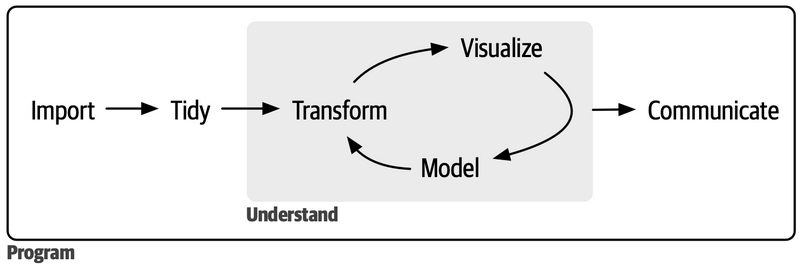
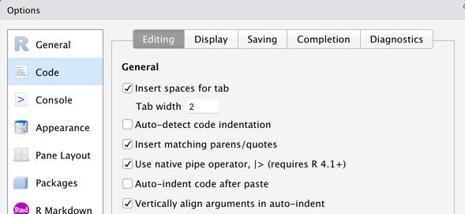
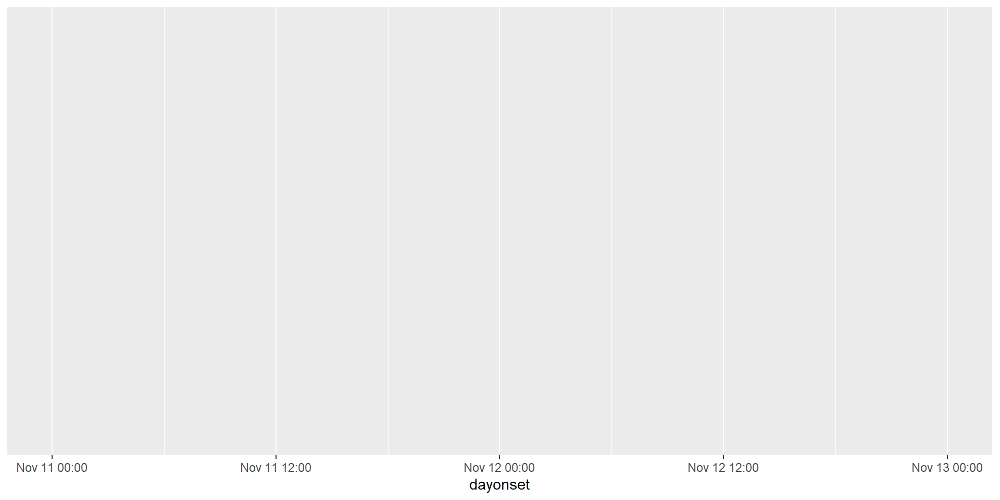
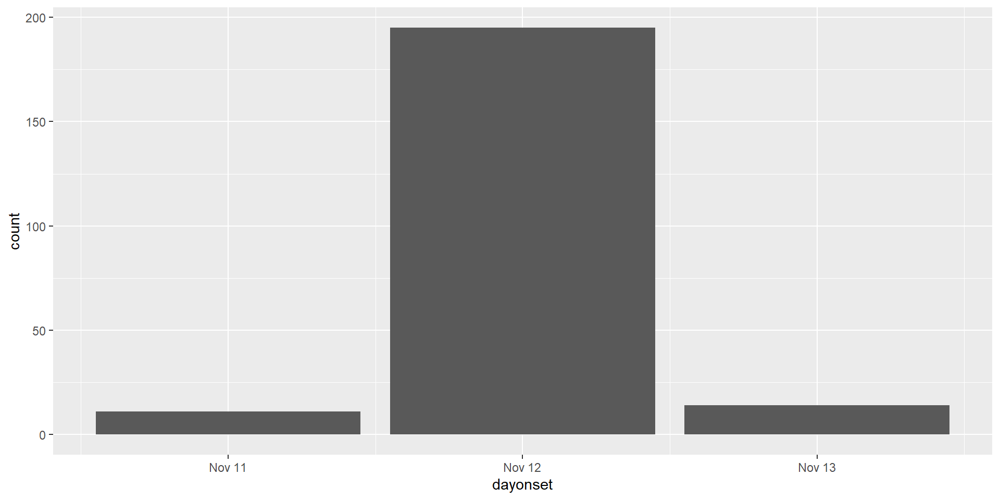
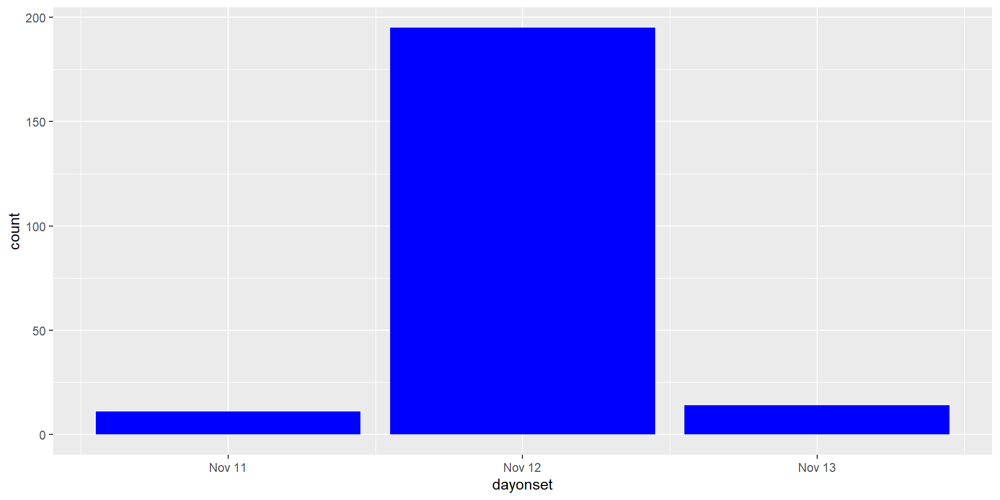
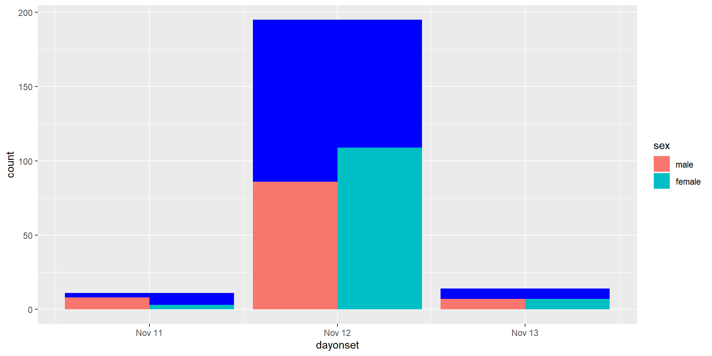
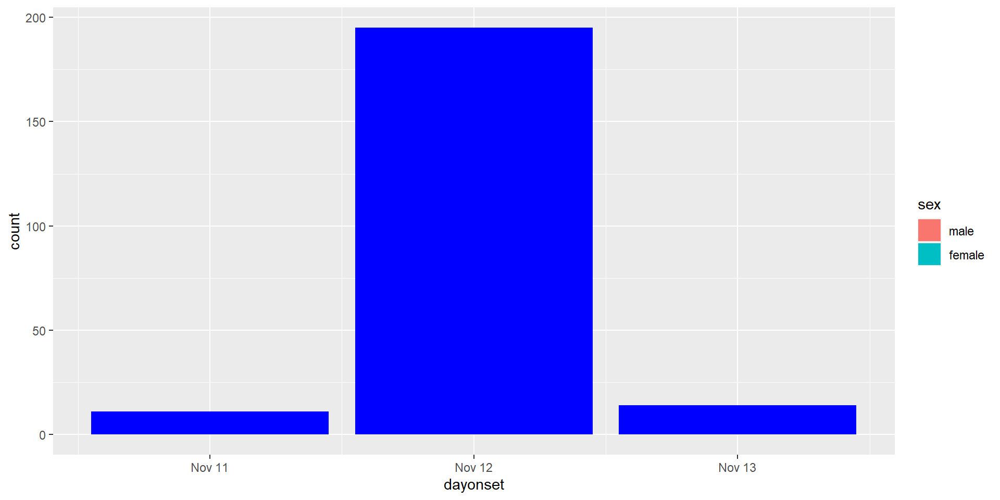
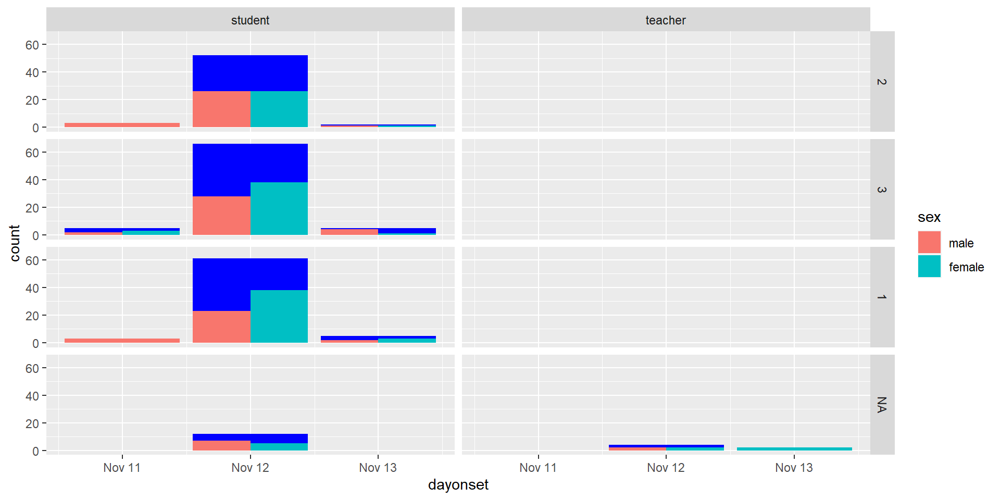
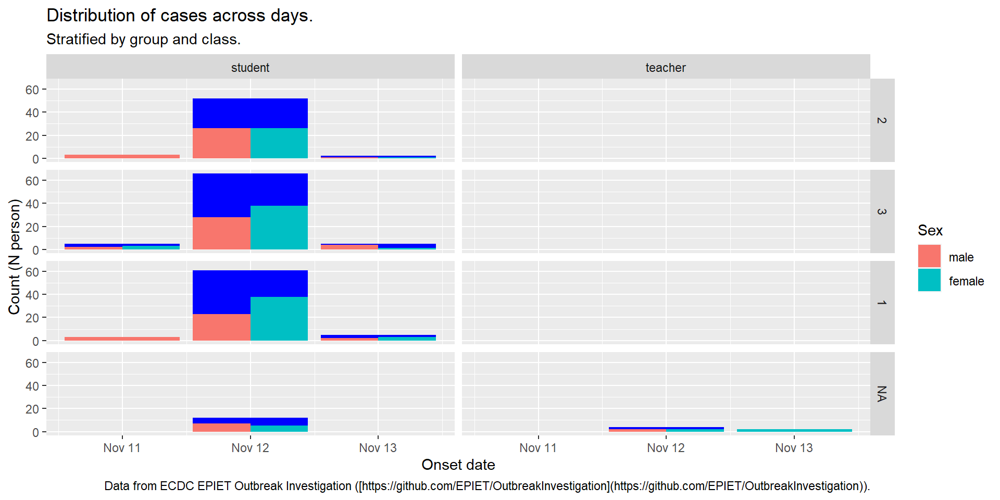

What is a ggplot, and what are its main components?
How should data be provided to a ggplot?
How can we create ggplots with the ggplot2 R package?
What are:
aesthetics?
geometries?
facets?
Plot themes and labs?
Lesson Objectives
To be able to
Use the R native pipe (|>) to concatenate functions, knowing that the {magrittr} one (%>%) has similar behavior.
Create anonymous functions in the R native style as \(x) to use with, but not limited to, pipes.
Create basic plots with ggplot2 (scatter, histogram, barplot, boxplot, and time-series), including grouped plots with or without colors and plots of multiple types.
Use the facet_* functions to stratify plots according to data.
Modify the main style component of a plot (i.e., sub-/titles, labels, legends)
Use the main patchwork functions to compose a plot by multiple ones.
Save a plot as a stand-alone image file.
Pipes
…, and then…, and then…, and then …, …
Setup
We adopted the Tidyverse ecosystem during the course using the tidyverse R package.
library(tidyverse)
── Attaching core tidyverse packages ──────────────────────── tidyverse 2.0.0 ──
✔ dplyr 1.1.4 ✔ readr 2.1.4
✔ forcats 1.0.0 ✔ stringr 1.5.1
✔ ggplot2 3.4.4 ✔ tibble 3.2.1
✔ lubridate 1.9.3 ✔ tidyr 1.3.0
✔ purrr 1.0.2
── Conflicts ────────────────────────────────────────── tidyverse_conflicts() ──
✖ dplyr::filter() masks stats::filter()
✖ dplyr::lag() masks stats::lag()
ℹ Use the conflicted package (<http://conflicted.r-lib.org/>) to force all conflicts to become errors
Tip
pkg::fun() explicitly tells R the package to look for the function.
If multiple packages have functions with the same name, and if the package is not indicated explicitly in the call, the last attached one (i.e., ?libraryed) has the priority (i.e., it masks the others).
Using pkg::fun() instead of fun(), you are sure about the function R calls.
Put an X next to the correct answer, under section 1.2. Ex7 in the pad.
Tidyverse convention
One of the advantages of the Tidyverse is that common standards make everything easier to remember, understand (e.g., when reading the code for self or other people), and apply.
Important
Functions are verbs (they do something)
argument and objects are nouns (they are something)
Functions first argument is always data (tibble/data frames)
Output is always data.
Output is always the same type of data (whatever input or option is provided)
Data analyses: a sequence of actions
Import: define a path, and then… read it, and then… initial fixes (e.g., removing empty rows or columns)
Tidying: take the data, and then… separate merged information, and then…, …, and then… reshape the data to tidy them
Transforming: take the data, and then… mutate some variables accordingly to desiderata (e.g., making factors, converting dates, or cleaning text, and then… filter unwanted observations for the current study.
Visualize: take the data, and then… select what to plot, and then… define how to plot, and then… restyle accordingly to desiderata, and then… save it.
Analyse: take the data, and then… reshape it accordingly to the model requirements, and then… fit the model, and then… summarize the model, and then… plot the results

Your Turn
Suppose you have the following functions:
sum_x_y <-function(x, y) x + ymultiply_x_y <-function(x, y) x * ydivide_by_two <-function(x) x /2
Pretend that it is a difficult problem, and you want to use only those functions to find a trapezoid area with the following data already defined in your R session:
Write (in new lines under section 1.2. Ex8) ways you can manage objects in R that will be progressively modified by a sequence of operations (i.e., functions).
01:00
Overwrite the result
res <-sum_x_y(a, b)res <-divide_by_two(res)res <-multiply_x_y(res, h)res
[1] 10
What if we need to debug this code? If we make mistakes, we’ll need to re-run the complete pipeline from the beginning!
It is hard to follow what is change each line considering that we repeated res (that is the name of our final result) six time!
Change name every time can surely solve 2. Let see.
Which takes the worst of both, adding the difficult in debugging and correcting all the numbers in intermediate changes happened; or, worst, starting having non-sequential numbered variable names!
So we can compose functions one inside other to get the resutl directly! Let see
Compose function calls
res <-multiply_x_y(divide_by_two(sum_x_y(a, b)), h)res
[1] 10
Quite unreadable and extremely difficoult to follow; mainly because each argument is at a increasing distance from its function names (e.g., multiply_x_y is the first name appearing, and its second argument h is the last one!)
We could improve readability by indenting our code (which is surely a good thing to do)
res <-multiply_x_y(divide_by_two(sum_x_y(a, b) ), h)res
[1] 10
But, it remain quite difficult to understand what the function does; at least, it is not immediate natural!
So that are the reasons wy we need a tool, and that is the pipe. Let’s have a look at it.
Use pipes
In it simpler definition the pipe (which now a native symbol in R |>) is an operator that thakes the result of whatever is evaluated in its left and use it as the first input of the function call at its right (that must be a proper function call, with at least one argument)
Tip
In math point of view, pipe transforms \(f(x,\ y)\) into \(x\ |> f(y)\). So that we can restructure \(f(g(x))\) as \(g(x)\ |> f()\).
Tip
Try to read the pipe as “and than…”
res <-sum_x_y(a, b) |>divide_by_two() |>multiply_x_y(h)res
[1] 10
Every argument is exactly next to its function call
We create the result object only
We can naturally read what the code do: “it takes the sum of a and b, and then… divide the result by two, and then… multiply the result by h”; and that’s it, the spelled formula of trapezoid areas!
Imagine we have a dataset representing the daily number of new infection cases reported in a specific area over a week. Unfortunately, there was a day when data couldn’t be collected due to a system malfunction, resulting in a missing value. Our goal is to calculate the average (2 significant digits) day-to-day fluctuation in the number of new cases reported over the week.This measure can help public health officials understand the volatility in the spread of the infection and potentially identify any unusual spikes or drops in case numbers.
Open the script 06-pipe.R, and reformat the code using the native pipe the code.
In the pad, under section 1.2 - Ex.9 report your preference putting an X next to your selection.
You can solve the problem with the following code:
Pipes in R first appear with the magrittr package in 2014 as %>%, and it has been part of the tidyverse since that time. Now it still in the tidyverse, and still the default in RStudio IDE keyboard shortcut CTRL/CMD + SHIFT + M.
Now, Tidyverse team suggest to switch to the native pipe, appearing in R 4.0.1 in 2021.1
Tip
Change the RStudio default shortcut CTRL/CMD + SHIFT + M to use the native pipe.

Pipes in composing plots
In the next section we will learn how to create plots with ggplot2.
We will create plots progressively adding what we will call layers of the plot.
For ggplot2 plots composition only, we have a dedicated pipe that is the plus sign +, reminding that we are adding elements.
Tip
Functions in ggplot2 are nouns and not verbs, exactly because we (sequentially) add them to the plot we are creating!1
{ggplot2}
The R Layered Grammar of Graphics
Setup
First of all setup our environment for this lesson, and load some data.1
The Data
On November 14th 2006 the director of a high school in Greater Copenhagen, Denmark, contacted the regional public health authorities to inform them about an outbreak of diarrhoea and vomiting among participants from a school dinner party held on the 11th of November 2006. Almost all students and teachers of the school (750 people) attended the party.2
library(tidyverse)library(here)library(rio)linelist <-here("data-raw/Copenhagen_clean.xlsx") |>import() |>mutate(across(where(is.character), fct))head(linelist) # for slides, first 6 obs only.
Definitions:1Tidy data.
A variable is a quantity, quality, or property that you can measure.
A value is the state of a variable when you measure it. The value of a variable may change from measurement to measurement.
An observation is a set of measurements made under similar conditions (you usually make all of the measurements in an observation at the same time and on the same object). An observation will contain several values, each associated with a different variable. We’ll sometimes refer to an observation as a data point.
Tabular data is a set of values, each associated with a variable and an observation.
In the next lessons, we will focus more on this, including how to convert non tidy dataset in tidy ones!
Important
Tabular data is tidy if:
Each value is placed in its own “cell”.
Each variable in its own column.
Each observation in its own row.
Why a Layered Grammar for Graphics
Using the ggplot2 system to create graphs, we won’t need to learn all the commands to produce every plot but we can learn a single system, a grammar, that will make us able to produce quite every kind of graph.
mapping each of them to the aesthetics of our choice (e.g., x, y, colors)
using the geometrical representation we need (e.g., points, lines, bars)
after having possibly transformed them by some statistics
accordingly to possibly different coordinate systems (e.g., polar)
maybe stratifying the plot for some information in the data itself
and customize its theme with regard to our stylistic needs and metadata (e.g., title, labels, …)
Important
By learning the grammar to control these 7 components, we can build quite any kind of graph using quite any kind of personalization.
Tip
We will rarely need to use all these components. In this course, we will provide the basis for 1-3 (required to _have_ a plot), 6, and 7, while we will only mention at 4 and 5.
Each part of the plot will be build using a single variable in our data, so that we can build the plot up the data we have, and, on the other side, we can control any part of the plot by our data.
ggplot(linelist)
Important
All the ggplot2 plots start from tabular data, calling ggplot on them.
Tip
Calling ggplot on data provide a white canvas to start building the plot.
1. Data
Each part of the plot will be build using a single variable in our data, so that we can build the plot up the data we have, and, on the other side, we can control any part of the plot by our data.
linelist |># start from data, and than...ggplot() # create a plot
Important
All the ggplot2 plots start from tabular data, calling ggplot on them.
Tip
Calling ggplot on data provide a white canvas to start building the plot.
2. Aesthetics
Let’s say we want to investigate the distribution of the dayonset. We should map the dayonset variable to the x axis!
linelist |># start from data, and than ggplot( # create a plotaes( # with aesthetics:x = dayonset ) )

Important
The aes function maps variables to aesthetics of our plot.
Main aesthetics
Important
You use aesthetics for visualize the data.
x, y: position along the x and y axes.
alpha: the transparency of the geometries.
colour: the color of the geometries according to the data.
fill: the interior color of the geometries.
group: to which group a geometry belongs.
linetype: the type of line used (solid, dotted, etc.).
shape: the shape of the points.
size: the size of the points or lines.
3. Geometries
Once having the canvas and the mappings, we can add a geometrical layer. In this case, we what to add bars for dayonset (i.e., x).
linelist |># start from data, and than ggplot( # create a plotaes( # with aesthetics:x = dayonset ) ) +geom_bar() # drawing bars
Tip
In the help description of each geom_* there are the required aesthetics that it neededs to be used.

Important
All geometry functions are called geom_*, with * indicating the type of geometry:
Under the section 1.3. Ex10, write (in a new line) what is your opinion.

Important
For having a blue bar chart, put the parameter within the geom_*etry call, and out of the aes call: these are parameters used to set aesthetics to a fixed value, like colour = "red" or size = 3, instead of mapping data to the aesthetics!
Multiple geom_*etries
We can also add multiple geom_*etries one on top of the others. In which case, it could be useful to set personalized aesthetics and customized the position of the geoms.
linelist |># start from data, and than ggplot( # create a plotaes( # with aesthetics:x = dayonset ) ) +geom_bar(fill ="blue") +geom_bar(aes(fill = sex),position ="dodge" )
Tip
We can set also aesthetics within a single geom_* without affecting the other.
Important
We would like to also set the position of the geom_* we are creating.

Multiple geom_*etries
We can also add multiple geom_*etries one on top of the others. In which case, it could be useful to set personalized aesthetics and customized the position of the geoms.
linelist |># start from data, and than ggplot( # create a plotaes( # with aesthetics:x = dayonset ) ) +geom_bar(aes(fill = sex),position ="dodge" )geom_bar(fill ="blue")

Important
geom_*s are added in order, so the operation is NOT commutative!
Main positions
Important
You use positions for place the geom_*s.
"stack": (default) multiple bars occupying the same x position will be stacked atop one another.
"dodge": dodged side-to-side.
"fill": shows relative proportions at each x by stacking the bars and then standardising each bar to have the same height.
"jitter": adds random noise to a plot making it easier to read, sometimes.
Base template
Up to now, we can have a minimal set of instructions to define a base template for our plots.
Open the script 07-ggplot.R and follow the instruction step by step to create a plot.
Using the data provided, think of a simple plot, and build it mapping data to the right aestetics, and adding the right geom_*.
Take a screenshot (Win: SHIFT + Win + S; Mac: SHIFT + CMD + 3) of your plot and paste it on the pad, for other to share, under the section 1.3. Ex11.
03:00
Facets
We can then stratify our plot by the levels of one or two discrete data in our data set, creating distinct plot with the data for each class, displyed in distinct facets..
linelist |># start from data, and than ggplot( # create a plotaes( # with aesthetics:x = dayonset ) ) +geom_bar(fill ="blue") +geom_bar(aes(fill = sex),position ="dodge" ) +facet_grid( class ~ group )
Important
facet_grid forms a matrix of panels defined by row and column faceting variables.

Tip
facet_grid is most useful when you have two discrete variables, and all combinations of the variables exist in the data. If you have only one variable with many levels, try ?facet_wrap.
Customize metadata: primary labels
Now we can start to make it nicer, adding and improving some text and label, as the title, axis and legend labels, and a caption.
linelist |># start from data, and than ggplot( # create a plotaes( # with aesthetics:x = dayonset ) ) +geom_bar(fill ="blue") +geom_bar(aes(fill = sex),position ="dodge" ) +facet_grid( class ~ group ) +labs(## aesthetics used titlesx ="Onset date",y ="Count (N person)",fill ="Sex",## plot metadatatitle ="Distribution of cases across days.",subtitle ="Stratified by group and class.",caption ="Data from ECDC EPIET Outbreak Investigation ([https://github.com/EPIET/OutbreakInvestigation](https://github.com/EPIET/OutbreakInvestigation))." )
Important
facet_grid forms a matrix of panels defined by row and column faceting variables.

Tip
facet_grid is most useful when you have two discrete variables, and all combinations of the variables exist in the data. If you have only one variable with many levels, try ?facet_wrap.
Theme
Many other options we can finally consider to fine tune the appearance of our plot.
linelist |># start from data, and than ggplot( # create a plotaes( # with aesthetics:x = dayonset ) ) +geom_bar(fill ="blue") +geom_bar(aes(fill = sex),position ="dodge" ) +facet_grid( class ~ group ) +labs(## aesthetics used titlesx ="Onset date",y ="Count (N person)",fill ="Sex",## plot metadatatitle ="Distribution of cases across days.",subtitle ="Stratified by group and class.",caption ="Data from ECDC EPIET Outbreak Investigation ([https://github.com/EPIET/OutbreakInvestigation](https://github.com/EPIET/OutbreakInvestigation))." ) +theme_minimal() +theme(legend.position ="top" )
Themes: showcase
Theme customiz parameters are quite much, here we report a representation of a number of them.
Open again the script 07-ggplot.R and improve your plot facet_*ing it, including ?labs and customized somehow the ?theme.
Take a screenshot (Win: SHIFT + Win + S; Mac: SHIFT + CMD + 3) of your plot and paste it on the pad, for other to share, under the section 1.3. Ex12. Next, save it in a file format of your choice, and send the file inthe Teams chat.
03:00
Homework
Posit’s RStudio Cloud Workspace
Project: Day-1
Instructions:
Go to: https://bit.ly/ubep-rws-website
The text is the Day-1 assessment under the tab “Summative Assessments”.
Script to complete on RStudio: solution.R
Acknowledgment
To create the current lesson, we explored, used, and adapted content from the following resources: